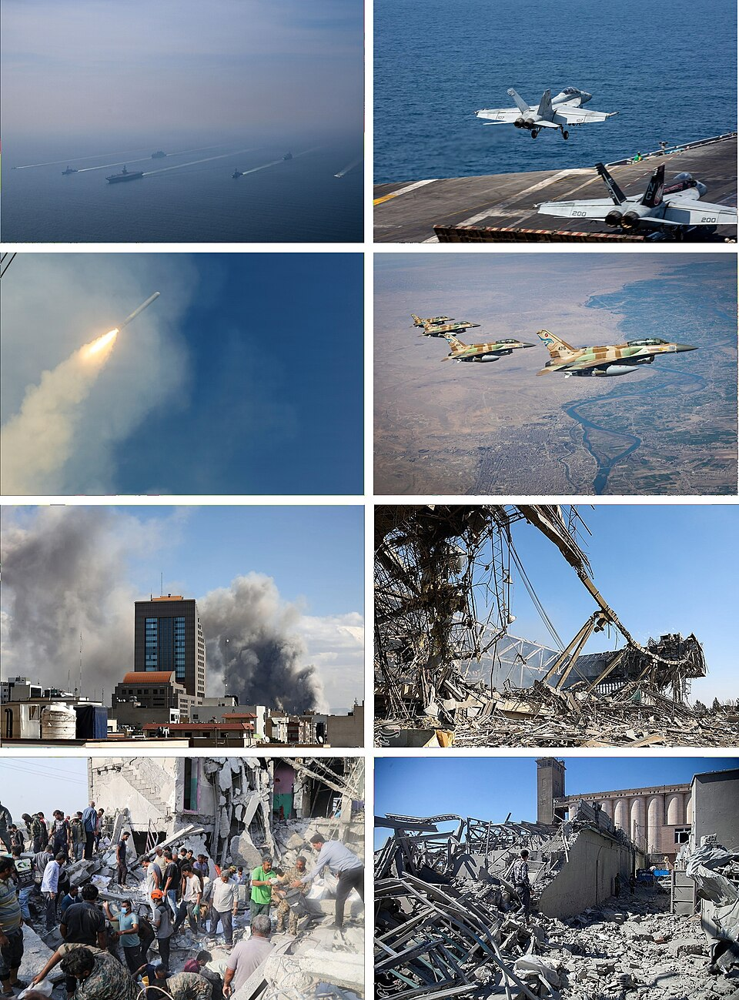

Operation Epic Fury — Day 102
Since , the United States and Israel have been engaged in a military conflict with Iran that has reshaped the Middle East, disrupted global energy markets, and displaced over a million people.
Read Today's Report →Last updated: at 04:00 UTC · View full timeline →
Featured Investigation
Daily Reports
Strategic Reserve Depletion Raises Stakes as Oil Climbs Past $115
U.S. strategic petroleum reserves approach critical levels as diplomatic framework talks show no breakthrough. Oil prices climb past $115 per barrel while over 3,000 vessels remain stranded near Hormuz.
Read full report → DAY 101Economic Pressure Mounts as Diplomatic Talks Remain Stalled
Oil prices climb past $115/barrel as markets absorb the reality that the Hormuz crisis could extend well into summer. Strategic petroleum reserves near critical depletion as diplomatic framework negotiations show little progress.
Read full report → DAY 100One Hundred Days: No Resolution as Hormuz Crisis Deepens
The war reaches its 100-day milestone with no breakthrough in sight. Over 3,000 vessels remain stranded near the Strait of Hormuz as negotiators struggle to bridge fundamental gaps on sanctions relief and security guarantees.
Read full report → DAY 99Hormuz Shipping Gridlock Persists as Diplomatic Impasse Deepens
Over 3,000 vessels remain stranded near Strait of Hormuz as framework disputes continue to stall diplomatic progress. Markets show growing concerns that the standoff could persist well beyond initial expectations.
Read full report → DAY 98Shipping Backlog Deepens as Diplomatic Deadlock Persists
Over 3,000 vessels remain stranded near Strait of Hormuz as framework disputes stall progress toward reopening. Oil markets hold near $97 Brent while Fed officials signal patience on rate cuts amid persistent energy inflation.
Read full report → DAY 97Markets Weigh Fed Policy as Diplomatic Framework Remains Elusive
Oil markets stabilize near $97 Brent as investors digest the growing divergence between US and Iranian negotiating positions. Fed policy expectations shift as persistent energy inflation complicates the path forward.
Read full report → DAY 95Markets Hit New Records as Oil Rebounds; Rubio Rejects Iran Sanctions Relief
S&P 500 tops 7,600 and Dow reaches all-time high as Marvell surges 32% on AI chip demand. Brent crude climbs to $96 as Secretary Rubio tells Senate no sanctions will be lifted for Hormuz reopening.
Read full report → DAY 94Western Powers Weigh Response to Iran's Conditional Peace Terms
Iran's parliament narrowly approved the peace framework with conditional amendments requiring P5+1 guarantees, setting up a final diplomatic scramble before tomorrow's deadline as hardliners secured partial victory in the ratification vote.
Read full report → DAY 91Parliament Votes: Ratification Showdown Begins
Iran's parliament convenes for the most consequential vote of the war — ratification of the peace framework that could end three months of conflict or collapse under hardliner amendments with just two days before the May 31 deadline.
Read full report → DAY 9024 Hours to Vote: Parliament Braces for Ratification Showdown
With just one day until Parliament Speaker Ghalibaf's scheduled vote, moderate MPs make final appeals while hardliners threaten amendments that could collapse the peace framework hours before the May 31 P5+1 deadline expires.
Read full report → DAY 89Four Days to Vote: Diplomatic Pressure Mounts as Hardliners Prepare Amendments
With the May 29 ratification vote just 48 hours away, moderate MPs scramble for votes while hardliners draft last-minute amendments demanding written sanctions guarantees that could derail the entire peace framework before the May 31 P5+1 deadline expires.
Read full report → DAY 88Five Days to Deadline: Iran's Parliament Sets Final Vote for May 29
Parliament Speaker Ghalibaf scheduled the final ratification vote for May 29, giving lawmakers just 48 hours before the May 31 diplomatic deadline expires with Iran's parliamentary process set to deliver a verdict two days before time runs out.
Read full report → DAY 87Iran's Parliament Votes to Advance P5+1 Framework as Deadline Clock Ticks
Iran's Majlis passed a procedural vote sending the P5+1 peace framework to full parliamentary debate, clearing the first formal hurdle as both sides race against a May 31 diplomatic deadline with just six days remaining.
Read full report → DAY 86Ghalibaf Schedules First Procedural Vote as 7-Day Deadline Looms
Parliament Speaker Mohammad Bagher Ghalibaf announced a procedural vote on the P5+1 framework for Sunday, May 25, following a week of intense backroom negotiations, as Iran enters the final seven days before the May 31 diplomatic deadline.
Read full report → DAY 85Parliament Deadlock Enters Seventh Day With No Vote Scheduled
Iran's Majlis entered a seventh day of debate on the P5+1 peace framework with Speaker Ghalibaf still refusing to set a vote date, as hardliners demanded written guarantees and reformists warned amendments could collapse the deal entirely with just 8 days until the May 31 diplomatic deadline.
Read full report → DAY 84Parliamentary Deadlock Drags Into Sixth Day
Iran's parliamentary debate on the P5+1 enforcement framework entered its sixth day as hardliners and reformists remained deadlocked over sanctions relief timelines with no vote scheduled, narrowing the window before the May 31 diplomatic deadline.
Read full report → DAY 82Parliament Review Extends Into Fourth Day as Hardliners Demand Text Changes
Iran's parliamentary review of the P5+1 enforcement framework entered its fourth day with the conservative bloc shifting from procedural objections to demanding specific textual amendments on sanctions relief and verification timelines.
Read full report → DAY 81Conservative Bloc Pushes Framework Amendments as Review Drags On
Iran's hardline conservatives demanded amendments to the P5+1 framework during day three of parliamentary review, extending the approval timeline as oil markets showed renewed volatility.
Read full report → DAY 80Hardliners Demand Guarantees as Parliament Review Enters Second Day
Iran's parliamentary review of the P5+1 framework entered its second day with hardline factions intensifying pressure on leadership, demanding binding commitments on sanctions relief and verification safeguards.
Read full report → DAY 79Iran's Parliament Begins Framework Debate as Supreme Leader Demands Guarantees
Iran's Islamic Consultative Assembly opened formal debate on the P5+1 enforcement framework as domestic political divisions sharpened over acceptance terms and hardliners demanded ironclad guarantees on sanctions relief.
Read full report → DAY 78Implementation Phase Begins as Iran Reviews Framework Terms
Following P5+1 ratification, Iran began formal review of enforcement framework as sanctions relief timeline was outlined and IAEA verification teams prepared for deployment under the newly binding international commitment.
Read full report → DAY 77P5+1 Vote Ratifies Enforcement Framework as Ceasefire Path Solidifies
P5+1 foreign ministers formally ratified enforcement framework in landmark vote, transforming diplomatic momentum into binding commitment and clearing pathway toward ending the 77-day war.
Read full report → DAY 75Iran Accepts P5+1 Framework as Ministers Move to Ratification Vote
Tehran formally accepted enforcement framework contingent on sanctions timeline. P5+1 ministers scheduled ratification vote as diplomatic momentum accelerated toward binding agreement.
Read full report → DAY 74P5+1 Ministers Schedule Framework Vote as Iran Signals Conditional Acceptance
P5+1 enforcement framework advanced to formal vote after ministerial consensus. Tehran indicated potential acceptance contingent on sanctions relief timeline. Snap-back mechanism language finalized after Vienna consultations as diplomatic momentum accelerated.
Read full report → DAY 73P5+1 Framework Vote Advances as First IAEA Teams Complete Initial Site Assessments
Enforcement framework moved toward final political approval as IAEA inspection teams completed first round of verification assessments under new protocols. Snap-back mechanism language neared consensus after Vienna consultations.
Read full report → DAY 72IAEA Inspection Teams Deploy Across Iran as Enforcement Framework Nears Final Vote
First IAEA inspection teams began deployment under new verification protocols as P5+1 ministers in Vienna worked toward final approval of enforcement mechanisms. Compliance systems entered active implementation phase, building on yesterday's ministerial summit.
Read full report → DAY 71P5+1 Foreign Ministers Convene in Vienna as Final Framework Vote Approaches
With enforcement framework text nearly finalized, P5+1 foreign ministers opened high-level consultations in Vienna. IAEA technical deployment continued as ministerial summit works toward final political approval of compliance mechanisms.
Read full report → DAY 69Enforcement Framework Text Near Completion as Technical Teams Set Implementation Roadmap
Building on yesterday's hybrid sanctions mechanism breakthrough, P5+1 teams worked through consolidated compliance language while IAEA technical experts finalized sampling deployment schedules and threshold definitions for the agreed enforcement triggers.
Read full report → DAY 68Sanctions Snap-Back Compromise Emerges as P5+1 Narrows Enforcement Gap
Negotiators report breakthrough on hybrid sanctions mechanism combining automatic triggers with Security Council oversight. Technical teams advance implementation timelines while political divisions narrow on compliance framework.
Read full report → DAY 67P5+1 Edges Toward Compromise Framework as Sanctions Trigger Deadlock Persists
Following yesterday's finalized sampling protocols, negotiators narrow gap on enforcement language while automatic sanctions triggers remain the key sticking point. Western and Chinese delegations report progress but no breakthrough.
Read full report → DAY 66Sampling Protocols Finalized as P5+1 Narrows Enforcement Mechanism Gap
IAEA and Iranian officials reach agreement on enrichment monitoring procedures while Western and Chinese negotiators make progress on compliance framework language, though automatic sanctions triggers remain unresolved.
Read full report → DAY 65IAEA Teams Complete Initial Facility Assessments, Verification Framework Advances
International inspectors finalize baseline protocols at Iranian enrichment sites as managed-access framework takes operational shape, marking substantive progress toward comprehensive verification architecture despite unresolved enforcement mechanism disputes.
Read full report → DAY 64Tehran Opens Nuclear Facilities as Verification Protocol Takes Shape
Iranian nuclear authorities grant IAEA inspection teams preliminary access to key enrichment facilities, completing initial technical assessments and establishing managed-access baseline protocols that represent first concrete implementation steps of emerging Franco-German verification framework.
Read full report → DAY 62P5+1 Partners Convene as IAEA Verification Framework Takes Shape
P5+1 partners begin multilateral coordination meetings while IAEA technical teams advance managed-access inspection protocols, though Chinese alternative framework remains under development amid competing diplomatic initiatives.
Read full report → DAY 60European Framework Emerges as Tehran Tests Verification Boundaries
France and Germany unveil joint twelve-year enrichment framework merging IAEA verification protocols with Turkish duration proposal as Iran conducts underground centrifuge tests while signaling conditional flexibility on inspection access timelines.
Read full report → DAY 59Verification Protocol Negotiations Intensify as Economic Pressure Mounts
European mediators work to integrate Turkish twelve-year enrichment proposal with enhanced IAEA verification protocols as White House signals flexibility on duration in exchange for robust snap-back mechanisms while Tehran adapts to foreign currency depletion through unconventional financing.
Read full report → DAY 58Diplomatic Framework Advances as Tehran Economic Deadline Passes
Turkish twelve-year enrichment timeline gains traction among European mediators as Iran's foreign currency reserves cross historically critical depletion threshold without triggering immediate policy shift while verification protocol negotiations intensify across multiple diplomatic channels.
Read full report → DAY 57Turkey Proposes Twelve-Year Enrichment Timeline as Tehran Economic Clock Winds Down
Turkish mediation presents ten-to-twelve year uranium enrichment suspension compromise as Iran's foreign currency reserves enter final seventy-two hours before historically critical depletion threshold while European diplomatic channel gains momentum.
Read full report → DAY 56Blockade Enters Second Week as Iran's Reserves Near Critical Levels
US naval blockade completes eleventh day with Iran's foreign currency reserves approaching historically critical depletion threshold, while trilateral mediation efforts continue to seek compromise on enrichment suspension timelines amid growing signs of domestic economic pressure within Tehran.
Read full report → DAY 54US Naval Blockade Enters Second Week as Economic Pressure Mounts on Tehran
US naval blockade continues to strangle Tehran's economy as diplomatic efforts remain deadlocked over enrichment timelines and sovereignty disputes. Economic losses exceed $750 million in frozen Iranian oil revenues with both sides dug in despite mounting costs.
Read full report → DAY 53Blockade Economic Toll Tops $700 Million as Diplomatic Mediation Stalls
US naval blockade enters second week with Iran's oil export revenue completely frozen. Economic losses surpass $700 million as pressure mounts on both sides to accept modified mediation frameworks that remain deadlocked over uranium enrichment timelines and sovereignty concessions.
Read full report → DAY 49Framework Stalls as Iran Rejects Enrichment Cap
Pakistan-led ceasefire proposal hits impasse over uranium enrichment limits. US naval blockade continues into fourth day with zero Iranian shipping activity. Oil trades in narrow range as markets await diplomatic breakthrough or renewed escalation.
Read full report → DAY 48Blockade Holds as Mediators Push New Framework
US naval blockade enters third day as Pakistan, Egypt, and Turkey unveil revised 45-day ceasefire framework. Markets show cautious optimism with oil above $99. Trump signals conditional willingness to negotiate, Iran reiterates core demands.
Read full report → DAY 45Markets Erase War Losses as Trump Orders Naval Blockade After Peace Talks Collapse
S&P 500 closes at highest level since before the war as Trump orders naval blockade of Iranian ports after Islamabad peace talks collapse. Dow reverses 400-point loss on Trump's "Iran called" signal. Oil surges back above $100.
Read full report → DAY 44Islamabad Talks Stall on Hormuz Control as Israel-Lebanon Fighting Continues
Mediators struggle to bridge gap between Iran's demand for sovereign control over Strait and US insistence on free navigation. Lebanon front threatens to unravel fragile ceasefire as Netanyahu refuses to halt operations. Markets whipsaw on diplomatic uncertainty.
Read full report → DAY 43Islamabad Peace Talks Begin as Ceasefire Hangs by a Thread
Regional mediators convene in Islamabad for first formal negotiations as two-week ceasefire shows signs of strain. Hormuz passage remains minimal, Israel-Lebanon tensions unresolved, markets whipsaw on fragile diplomatic hopes.
Read full report → DAY 42Ceasefire Fragile on Day Two as Hormuz Remains Closed, Israel-Lebanon Tensions Threaten Deal
Two-week ceasefire holds but tensions mount. Iran accuses US of violations. Strait of Hormuz functionally closed despite agreement. Netanyahu excludes Lebanon from ceasefire, Pakistan disagrees. Markets whipsaw as oil rebounds, energy stocks fall.
Read full report → DAY 41Islamabad Accords Ceasefire Triggers Historic Market Surge, Oil Crashes 16%
Two-week ceasefire declared. Oil crashes 16% in largest single-day drop since 2020. Dow surges 1,325 points. Hormuz reopening uncertain as IRGC maintains control. Energy stocks hammered while airlines, travel stocks soar on peace premium.
Read full report → DAY 40Missing US Pilot Recovered Alive as Trump's Hormuz Deadline Triggers Massive Escalation
US rescue forces extract missing F-15E crew member after three-day manhunt. Trump's Monday deadline expired, triggering new wave of strikes. Iran retaliates with largest missile barrage yet. Oil surges past $115/barrel.
Read full report → DAY 37Race to Find Missing US Pilot as Trump's Monday Deadline Looms
One F-15E crew member still missing after Friday's shoot-down. Iran offering rewards for capture. Trump's 48-hour Hormuz ultimatum expires Monday. Nuclear plant struck. Two US aircraft lost in worst day since Iraq War.
Read full report → DAY 36Two US Aircraft Shot Down in Single Day as Iran Proves Air Defenses Intact
F-15E Strike Eagle and A-10 Warthog lost to hostile fire — worst US aviation day since early Iraq War. One crew member still missing in Iran. Search-and-rescue helicopters damaged. Trump deadline 2 days away.
Read full report → DAY 35World Bypasses Washington as Coalition Forms to Reopen Hormuz
30 nations' military planners will meet next week to secure the Strait of Hormuz without US leadership. Markets volatile as 40-nation UK summit reveals America's diplomatic isolation. Oil near $111.
Read full report → DAY 33Trump Abandons Four Decades of Gulf Policy, Says Hormuz "Not Our Problem"
Trump declares US will leave Iran in two or three weeks. Abandons 40+ years of US Gulf doctrine. IRGC threatens 18 US tech companies. NATO shoots down Iranian missile over Turkey. Three NATO allies restricting US military access. US gas hits $4/gallon.
Read full report → DAY 32Iranian Drone Strikes Kuwaiti Oil Tanker at Dubai Port as Gulf Leaders Meet in Jeddah
Iranian drone struck the Kuwaiti tanker Al-Salmi at Dubai port. Iran fires ballistic missile into Turkish airspace, shot down by NATO. Brent past $116.
Read full report → DAY 31Marines Arrive for Ground War as IRGC's University Deadline Passes
2,500 US Marines equipped for amphibious assault arrive in Middle East. IRGC's university retaliation deadline passes. April 6 Hormuz ultimatum seven days away. Oil at $112.
Read full report → DAY 30Houthis Enter War as Trump's April 6 Deadline Looms
Yemen's Houthis launch first ballistic missile attack on Israel. Iran vows "heavy price" after nuclear sites hit. April 6 Hormuz deadline eight days away. Brent at $112.57. One month into conflict.
Read full report → DAY 29Iran's "Heavy Price" Retaliation After Nuclear Facility Strikes
Iran prepares response after Israel struck Yazd and Arak nuclear sites yesterday. Trump's April 6 Hormuz deadline nine days away. 300+ US troops wounded. Brent at $112. Fifth week begins.
Read full report → DAY 28Trump Extends Hormuz Deadline to April 6 as Iran Calls Peace Plan 'One-Sided'
Iranian missile struck Prince Sultan Air Base in Saudi Arabia, wounding 10 troops. Israel launched strikes on two nuclear facilities. Iran's FM vowed "heavy" retaliation. Brent crude closed at $112.57/barrel — highest since 2022. Lebanon death toll: 1,116.
Read full report → DAY 27Israel Kills Hormuz Blockade Mastermind as Iran Rejects US Peace Plan
Israel claims to have killed IRGC Navy commander Alireza Tangsiri in Bandar Abbas — the architect of the Strait of Hormuz blockade. Iran formally rejected the US 15-point peace plan. Trump extended his energy infrastructure deadline by 10 days. Brent crude surged to ~$108/barrel.
Read full report → DAY 26Iran Dismisses Trump's Peace Claims as Strikes Kill 12 in Tehran
Day 26 brought an escalating gap between rhetoric and reality. Trump declared "war has been won" while Tehran's military forcefully dismissed any negotiations. 82nd Airborne deploying, oil plunged 6% to $94 on peace signals.
Read full report → DAY 25US Sends 15-Point Peace Plan to Iran as Bushehr Nuclear Plant Hit
US sends Iran a 15-point peace plan via Pakistan. Projectile strikes Bushehr nuclear plant grounds. Trump approves 1,000+ more troops. Lebanon expels Iran's ambassador. Oil whiplash continues.
Read full report → DAY 24Trump Blinks: Ultimatum Extended 5 Days Amid 'Very Good' Iran Talks
Trump extends Hormuz ultimatum by 5 days, halts strikes on Iran's energy sites, claims 'very good and productive conversations' with Iran. Iranian state TV declares 'US president backs down.' Tehran rocked by explosions. Iran fires missiles and drones at Bahrain.
Read full report → DAY 2348-Hour Ultimatum — Trump Threatens to Obliterate Iran's Power Grid
Trump gives Iran 48 hours to reopen Strait of Hormuz. Iran strikes near Dimona nuclear site, wounding 100+. Both sides target nuclear infrastructure.
Read full report → DAY 22Trump Hints at "Winding Down" as Iran Strikes Diego Garcia
Iran fires ballistic missiles at Diego Garcia in the Indian Ocean. Trump hints at "winding down" but rules out ceasefire. Death toll reaches 1,444. Kuwait's Mina al-Ahmadi refinery hit.
Read full report →